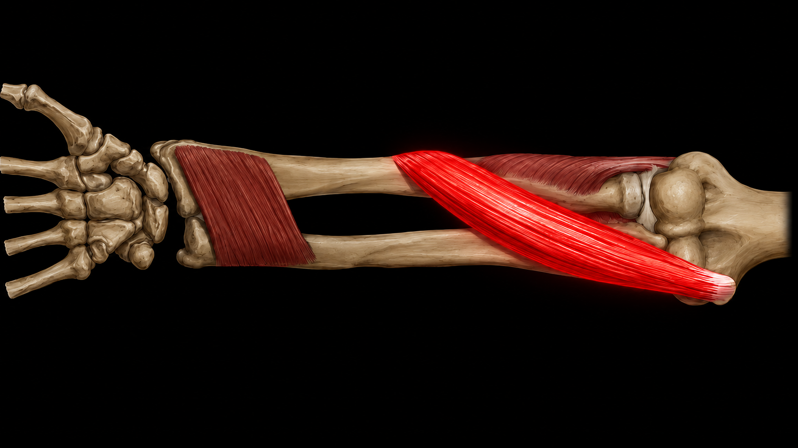
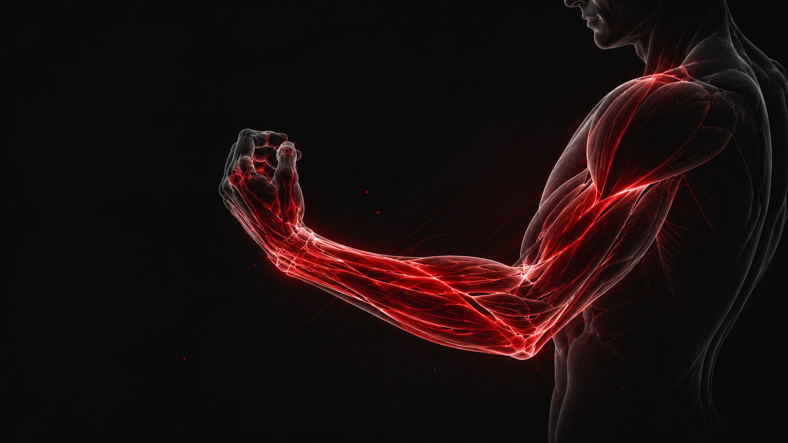
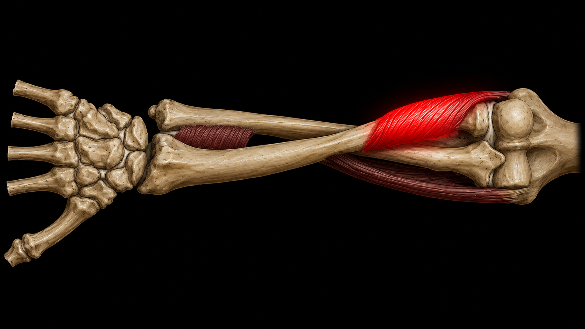
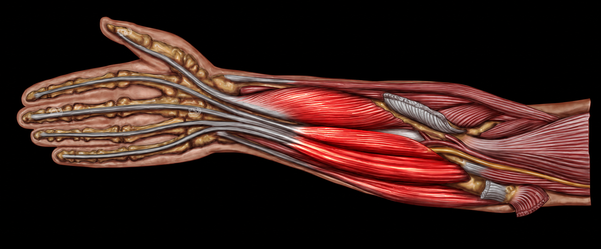
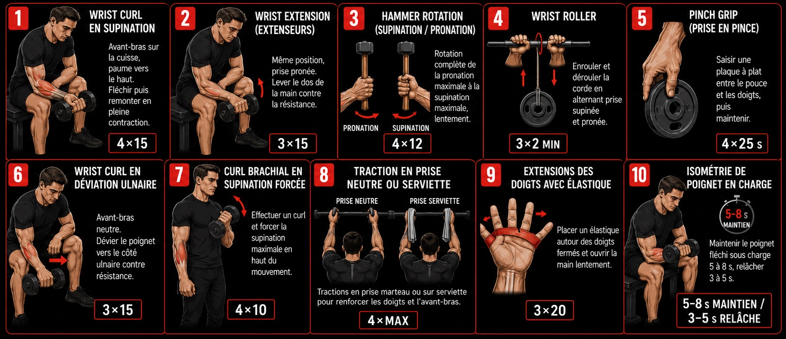

Force de grip, flexion du poignet, rotation de l'avant-bras — les muscles les plus fonctionnels du corps humain, et pourtant les plus négligés en salle. Ce guide couvre 10 exercices ciblés et un programme hebdomadaire.
Pas de salle ou peu de matériel ? Voir le programme à la maison →
La rotation de l'avant-bras paume vers le bas (pronation) est le mouvement central du press au bras de fer. Souvent absent des programmes classiques, c'est l'un des gains les plus rapides à construire. L'exercice se réalise au marteau, lentement, sur une plage de rotation complète.

La plupart des programmes de musculation ont un point commun : ils négligent presque totalement l'avant-bras et le poignet. Développés couchés, squats, tractions — ces exercices sollicitent indirectement la prise, mais ne développent pas la force de flexion du poignet, la rotation de l'avant-bras ni la force des doigts.
Pourtant, l'avant-bras est l'une des zones les plus sollicitées dans la vie quotidienne et dans la quasi-totalité des sports de contact, de combat, et de préhension. Une prise faible ou un poignet non renforcé devient rapidement le maillon limitant : en escalade, en judo, en tennis, ou dès que l'on cherche à soulever ou contrôler quelque chose avec les mains.

Les exercices de renforcement spécifiques de l'avant-bras et du poignet permettent de combler ce manque en ciblant directement les fléchisseurs et extenseurs du poignet, les supinateurs, les pronateurs, et les fléchisseurs des doigts — des muscles rarement isolés dans un programme classique.
Les blessures de coude et de poignet (épicondylite, tendinite du carpe) sont souvent dues à un déséquilibre entre fléchisseurs et extenseurs. Un programme équilibré les prévient efficacement.
La supination (rotation paume vers le haut) est le mouvement de base du top roll — la technique la plus utilisée en compétition. Cet exercice développe le supinateur et le chef court du biceps dans leur angle fonctionnel exact, absent du curl classique.

L'avant-bras contient plus de vingt muscles, mais six groupes concentrent l'essentiel de la force fonctionnelle. Comprendre leur rôle permet de choisir les bons exercices et d'éviter les déséquilibres.
Génèrent la flexion palmaire — le mouvement de "refermer le poignet vers soi". Ce sont les muscles les plus sollicités dans les sports de préhension et de force.
Antagonistes des fléchisseurs. Leur renforcement est indispensable pour équilibrer la chaîne et prévenir l'épicondylite latérale (tennis elbow).
Réalisent la rotation externe de l'avant-bras (paume vers le haut). Souvent sous-développés, ils sont pourtant essentiels dans de nombreux gestes sportifs.
Réalisent la rotation interne (paume vers le bas). Le carré pronateur et le rond pronateur travaillent en duo pour contrôler la rotation de l'avant-bras.
Responsables de la force de grip et de la prise. Travaillent en étroite collaboration avec les fléchisseurs du poignet dans tous les mouvements de préhension.
Ouvrent la main contre résistance. Rarement entraînés mais essentiels pour l'équilibre de la chaîne et la prévention des tendinites chroniques.
Le cupping est la position de poignet fondamentale du hook : flexion combinée vers l'intérieur et vers soi. C'est la posture à tenir sous pression maximale à la table. Cet exercice isométrique développe la force de maintien dans cette position spécifique au bras de fer.

Ces exercices couvrent l'ensemble des chaînes musculaires de l'avant-bras et du poignet. Ils sont utilisés aussi bien par des pratiquants de musculation générale que par des athlètes spécialisés dans les sports de force et de préhension.

Ces exercices forment la base du travail spécifique pratiqué en bras de fer — le sport qui pousse la force d'avant-bras et de poignet à son niveau le plus élevé. Si vous cherchez à appliquer ces qualités dans un contexte sportif concret, la suite de cet article vous en dit plus.
Ce programme peut s'intégrer à n'importe quel entraînement existant. Il est construit pour progresser sans surcharger les tendons — les structures les plus sensibles de cette zone.
| Jour | Focus | Exercices |
|---|---|---|
| Lundi | Fléchisseurs poignet + grip | 01, 02, 04, 05, 09 |
| Mardi | Repos ou autre sport | — |
| Mercredi | Supination + rotation + isométrie | 03, 06, 07, 08, 10 |
| Jeudi | Repos ou mobilité légère | Récupération active |
| Vendredi | Session complète légère | 01, 03, 05, 09 |
| Samedi | Repos ou sport libre | — |
| Dimanche | Repos complet | Récupération |
Important : progressez sur 4–6 semaines avant d'augmenter les charges. Les tendons s'adaptent deux à trois fois plus lentement que les muscles — aller trop vite est la première cause de tendinite de surcharge au poignet et à l'avant-bras.
Si vous souhaitez mettre ces exercices au service d'un objectif sportif concret, le bras de fer est le sport qui pousse la force d'avant-bras et de poignet le plus loin possible. Contrairement à la musculation classique, chaque match sollicite exactement les chaînes musculaires travaillées dans ce guide — flexion du poignet, supination, pronation, grip.
Le bras de fer est pratiqué à toutes les catégories de poids, par des hommes et des femmes, avec ou sans passé sportif. La force spécifique s'acquiert rapidement quand elle est soutenue par un renforcement ciblé comme celui présenté ici. Beaucoup de pratiquants découvrent qu'avec 2 à 3 mois de travail sérieux d'avant-bras, leur progression à la table est spectaculaire.
L'Armwrestling Club Strassen regroupe les pratiquants du Grand-Duché de Luxembourg. Les séances ont lieu à Strassen le mardi soir et à Munsbach le vendredi soir. Débutants bienvenus — la première séance est gratuite.
Appliquez ces exercices dans un sport concret. Première séance gratuite, aucun niveau requis.
Programme complet sans table, avec peu de matériel — entretenir la prise et les avant-bras entre les séances.
Voir le programme →Comprendre les 3 techniques pour savoir quels muscles cibler dans ton renforcement spécifique.
Lire l'article →Protocole de récupération, gestion des tendinites et prévention des blessures chroniques pour durer longtemps.
Lire l'article →